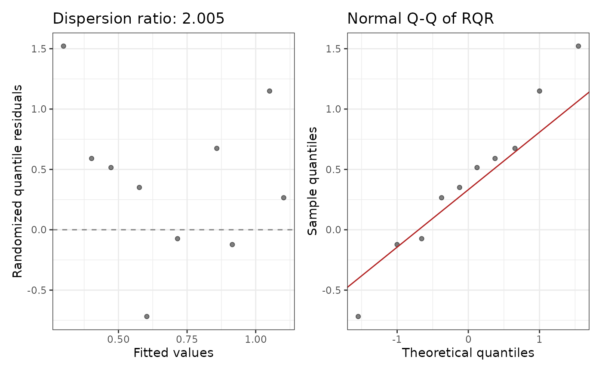

Fit a zero-inflated negative binomial regression model
Source:R/zeroinflNegbinGLM.R
zeroinflNegbinGLM.RdFits a zero-inflated negative binomial model (via pscl::zeroinfl()) with
separate count and zero-inflation components. Returns coefficients on the
response scale, randomized quantile residuals, a dispersion ratio, and a
diagnostic plot.
Arguments
- formula
A model formula for the count component (e.g.
y ~ x1 + x2). The response must be a non-negative integer count.- data
A data frame containing the variables in
formula(andziformulaif provided).- ziformula
A one-sided formula for the zero-inflation component (e.g.
~ x1). WhenNULL(default), the same right-hand side asformulais used for both components. Use~ 1for an intercept-only zero-inflation model.- ...
Additional arguments passed to
pscl::zeroinfl().
Value
An object of class c("zeroinflNegbinGLM", "zeroinflGLMfit", "countGLMfit"), a list with:
callThe matched call.
modelThe underlying pscl::zeroinfl fit object.
thetaThe estimated negative binomial dispersion parameter.
coefficientsA list with two data frames, each with columns
term,exp.coef,lower.95,upper.95:countExponentiated coefficients for the count component.
zeroExponentiated coefficients for the zero-inflation component.
summaryThe result of
summary()on the fitted model.diagnosticsA list with
rqr,dispersion_ratio, andplot(seepoissonGLM()for details).aicAIC of the fitted model.
bicBIC of the fitted model.
Details
Coefficient interpretation:
Count component: exponentiating a coefficient gives the multiplicative change in the expected count among non-structural-zero observations, for a one-unit increase in the predictor, adjusting for simultaneous linear changes in other predictors. For example, 1.5 means a 50% higher expected count.
Zero component: exponentiating a coefficient gives the multiplicative change in the odds of being a structural zero (vs. entering the count process) for a one-unit increase in the predictor.
When to use: Zero-inflated negative binomial is the most flexible of
the four models — it handles both excess zeros and overdispersion in the
non-zero counts. Prefer this over zeroinflPoissonGLM() when the non-zero
counts themselves remain overdispersed after zero-inflation is accounted for.
Examples
df <- data.frame(
y = c(0L, 0L, 0L, 1L, 2L, 0L, 3L, 0L, 1L, 0L),
x1 = c(1.2, -0.4, 0.8, -1.1, 2.0, 0.3, -0.9, 1.5, -0.2, 0.7)
)
fit <- zeroinflNegbinGLM(y ~ x1, data = df)
#> Warning: Count component: 4 events (y > 0) for 1 predictor(s) (4.0 per predictor). At least 10 events per predictor is recommended.
#> Warning: Zero-inflation component: 6 zeros for 1 predictor(s) (6.0 per predictor). At least 10 zeros per ZI predictor is recommended.
print(fit)
#>
#> Call:
#> zeroinflNegbinGLM(formula = y ~ x1, data = df)
#>
#> Model family: zeroinflNegbinGLM
#>
#> Count component (exponentiated coefficients):
#> term exp.coef lower.95 upper.95 p.value stars
#> (Intercept) 1.3408 0.4922 3.6523 0.5663
#> x1 0.9433 0.4383 2.0304 0.8814
#>
#> Zero-inflation component (exponentiated coefficients):
#> term exp.coef lower.95 upper.95 p.value stars
#> (Intercept) 0.6737 0.0820 5.5325 0.7131
#> x1 2.1030 0.4077 10.8486 0.3745
#>
#> Dispersion ratio: 2.0053
#> AIC: 31.60
plot(fit)

# Intercept-only zero component:
fit2 <- zeroinflNegbinGLM(y ~ x1, data = df, ziformula = ~ 1)
#> Warning: Count component: 4 events (y > 0) for 1 predictor(s) (4.0 per predictor). At least 10 events per predictor is recommended.